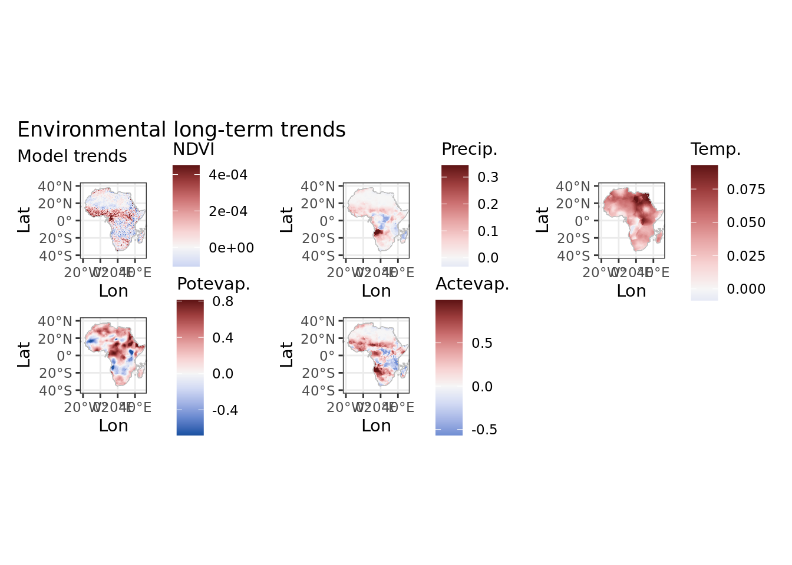
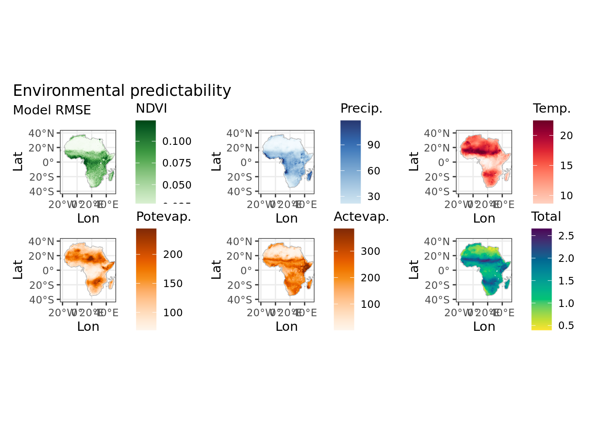

9 Environmental predictability
data_stars <- readRDS("data/processed/data_stars.RDS")
as.data.frame(data_stars) %>%
`colnames<-`(c("x", "y", "variable", "value")) %>%
pivot_wider(names_from = variable, values_from = value) %>%
mutate(tm_resid = rowMeans(dplyr::select(., tmmn_resid, tmmx_resid)),
tm_trend = rowMeans(dplyr::select(., tmmn_trend, tmmx_trend))) %>%
as.data.frame() %>%
identity() -> data
africa <- st_read("data/raw/Africa.gpkg")## Reading layer `Africa-Dissolved' from data source `/mnt/envirpred/raw/Africa.gpkg' using driver `GPKG'
## Simple feature collection with 1 feature and 2 fields
## geometry type: MULTIPOLYGON
## dimension: XY
## bbox: xmin: -25.3618 ymin: -50.01889 xmax: 77.60327 ymax: 37.55986
## CRS: 4326
xlims <- c(-20, 50)
ylims <- c(-40, 40)
xbreaks <- c(-20, 0, 20, 40)
range01 <- function(x, ...){(x - min(x, ...)) / (max(x, ...) - min(x, ...))}9.1 Environmental long-term trends
Color scales are mapped to (ie limited by) 1% and 99% quantiles, but for now I seem unable to calculate this on the fly in ggplot so these values are hard-coded and should be changed manually when the dataset changes.
ggplot(data) +
geom_sf(data = africa, colour = "grey", fill = NA, alpha = 0.5) +
geom_raster(aes(x = x, y = y, fill = ndvi_trend)) +
scale_fill_continuous_diverging(limits = c(-0.0002917907, 0.0004510269),
oob = scales::squish, na.value = NA, palette = "Blue-Red 3") +
coord_sf(xlim = xlims, ylim = ylims) +
scale_x_continuous(breaks = xbreaks) +
theme_bw() +
labs(x = "Lon", y = "Lat", fill = "NDVI") -> ndvi
ggplot(data) +
geom_sf(data = africa, colour = "grey", fill = NA, alpha = 0.5) +
geom_raster(aes(x = x, y = y, fill = pr_trend)) +
scale_fill_continuous_diverging(limits = c(-0.1588118, 0.3441482),
oob = scales::squish, na.value = NA, palette = "Blue-Red 3") +
coord_sf(xlim = xlims, ylim = ylims) +
scale_x_continuous(breaks = xbreaks) +
theme_bw() +
labs(x = "Lon", y = "Lat", fill = "Precip.") -> pr
ggplot(data) +
geom_sf(data = africa, colour = "grey", fill = NA, alpha = 0.5) +
geom_raster(aes(x = x, y = y, fill = tm_trend)) +
scale_fill_continuous_diverging(limits = c(-0.008640864, 0.092846610),
oob = scales::squish, na.value = NA, palette = "Blue-Red 3") +
coord_sf(xlim = xlims, ylim = ylims) +
scale_x_continuous(breaks = xbreaks) +
theme_bw() +
labs(x = "Lon", y = "Lat", fill = "Temp.") -> tm
ggplot(data) +
geom_sf(data = africa, colour = "grey", fill = NA, alpha = 0.5) +
geom_raster(aes(x = x, y = y, fill = pet_trend)) +
scale_fill_continuous_diverging(limits = c(-0.6805905, 0.8102751),
oob = scales::squish, na.value = NA, palette = "Blue-Red 3") +
coord_sf(xlim = xlims, ylim = ylims) +
scale_x_continuous(breaks = xbreaks) +
theme_bw() +
labs(x = "Lon", y = "Lat", fill = "Potevap.") -> pet
ggplot(data) +
geom_sf(data = africa, colour = "grey", fill = NA, alpha = 0.5) +
geom_raster(aes(x = x, y = y, fill = aet_trend)) +
scale_fill_continuous_diverging(limits = c(-0.5677155, 0.9933489),
oob = scales::squish, na.value = NA, palette = "Blue-Red 3") +
coord_sf(xlim = xlims, ylim = ylims) +
scale_x_continuous(breaks = xbreaks) +
theme_bw() +
labs(x = "Lon", y = "Lat", fill = "Actevap.") -> aet
ndvi + pr + tm + pet + aet + plot_layout(ncol = 3) +
plot_annotation(title = "Environmental long-term trends", subtitle = "Model trends")
ggsave(filename = "data/processed/plots/environmental_trends.pdf", device = "pdf", width = 12, units = "in")## Saving 12 x 5 in image9.2 Environmental predictability
Color scales are mapped to (ie limited by) 1% and 99% quantiles, but for now I seem unable to calculate this on the fly in ggplot so these values are hard-coded and should be changed manually when the dataset changes.
total_unpred <- function(data) {
out <- range01(scale(data["ndvi_resid"]), na.rm = TRUE) + range01(scale(data["pr_resid"]), na.rm = TRUE) +
range01(scale(data["tm_resid"]), na.rm = TRUE) + range01(scale(data["pet_resid"]), na.rm = TRUE) +
range01(scale(data["aet_resid"]), na.rm = TRUE)
as.matrix(out)
}
data["total"] <- total_unpred(data)
ggplot() +
geom_sf(data = africa, colour = "grey", fill = NA, alpha = 0.5) +
geom_raster(aes(x = x, y = y, fill = ndvi_resid), data = data) +
scale_fill_continuous_sequential(limits = c(0.006920418, 0.123886703),
oob = scales::squish, na.value = NA, palette = "Greens") +
coord_sf(xlim = xlims, ylim = ylims) +
scale_x_continuous(breaks = xbreaks) +
theme_bw() +
labs(x = "Lon", y = "Lat", fill = "NDVI") -> ndvi
ggplot() +
geom_sf(data = africa, colour = "grey", fill = NA, alpha = 0.5) +
geom_raster(aes(x = x, y = y, fill = pr_resid), data = data) +
scale_fill_continuous_sequential(limits = c(0.1481013, 118.3143118),
oob = scales::squish, na.value = NA, palette = "Blues") +
coord_sf(xlim = xlims, ylim = ylims) +
scale_x_continuous(breaks = xbreaks) +
theme_bw() +
labs(x = "Lon", y = "Lat", fill = "Precip.") -> pr
ggplot() +
geom_sf(data = africa, colour = "grey", fill = NA, alpha = 0.5) +
geom_raster(aes(x = x, y = y, fill = tm_resid), data = data) +
scale_fill_continuous_sequential(limits = c(5.577115, 22.475821),
oob = scales::squish, na.value = NA, palette = "Reds") +
coord_sf(xlim = xlims, ylim = ylims) +
scale_x_continuous(breaks = xbreaks) +
theme_bw() +
labs(x = "Lon", y = "Lat", fill = "Temp.") -> tm
ggplot() +
geom_sf(data = africa, colour = "grey", fill = NA, alpha = 0.5) +
geom_raster(aes(x = x, y = y, fill = pet_resid), data = data) +
scale_fill_continuous_sequential(limits = c(69.39295, 244.31387),
oob = scales::squish, na.value = NA, palette = "Oranges") +
coord_sf(xlim = xlims, ylim = ylims) +
scale_x_continuous(breaks = xbreaks) +
theme_bw() +
labs(x = "Lon", y = "Lat", fill = "Potevap.") -> pet
ggplot() +
geom_sf(data = africa, colour = "grey", fill = NA, alpha = 0.5) +
geom_raster(aes(x = x, y = y, fill = aet_resid), data = data) +
scale_fill_continuous_sequential(limits = c(1.212078, 384.816440),
oob = scales::squish, na.value = NA, palette = "Oranges") +
coord_sf(xlim = xlims, ylim = ylims) +
scale_x_continuous(breaks = xbreaks) +
theme_bw() +
labs(x = "Lon", y = "Lat", fill = "Actevap.") -> aet
ggplot() +
geom_sf(data = africa, colour = "grey", fill = NA, alpha = 0.5) +
geom_raster(aes(x = x, y = y, fill = total), data = data) +
scale_fill_continuous_sequential(oob = scales::squish, na.value = NA, palette = "Viridis") +
coord_sf(xlim = xlims, ylim = ylims) +
scale_x_continuous(breaks = xbreaks) +
theme_bw() +
labs(x = "Lon", y = "Lat", fill = "Total") -> total
ndvi + pr + tm + pet + aet + total + plot_layout(ncol = 3) +
plot_annotation(title = "Environmental predictability", subtitle = "Model RMSE")
ggsave(filename = "data/processed/plots/environmental_predictability.pdf", device = "pdf", width = 12, units = "in")## Saving 12 x 5 in imageAs ggplot2 stores the last figure in cache, and memory during knitting of this document/website is limited, we have to empty the cache now explicitly.
ggplot2::set_last_plot(NULL)
gc()## used (Mb) gc trigger (Mb) max used (Mb)
## Ncells 2077174 111.0 3785245 202.2 3785245 202.2
## Vcells 126589588 965.9 344369752 2627.4 430462190 3284.2